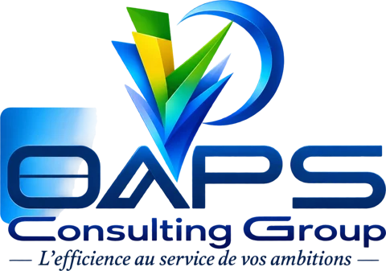

Parcours
utilisateurs Navigoal
De la première visite d'un lycéen africain à son installation au Maroc, et le parcours de chacun des acteurs qui l'accompagnent : parents, établissements, bailleurs, équipe Navigoal.
Document de présentation aux investisseurs
Novembre 2026 · navigoal.net
Une plateforme d'OAPS Consulting Group

Étudier au Maroc depuis l'Afrique : un parcours long, éclaté et risqué. Navigoal le réunit en une seule plateforme.
Le constat
- L'information est dispersée : sites d'écoles hétérogènes, reconnaissance des diplômes difficile à vérifier, frais rarement publiés.
- La famille finance tout à distance, souvent depuis la zone F CFA, sans visibilité sur le coût réel des études.
- Le logement se cherche sans pouvoir visiter, avec le risque d'arnaque à la caution.
- Les démarches (candidature, admission, visa, carte de séjour, banque) se font sans accompagnement.
Notre réponse
- Navigoal : orientation, catalogue d'écoles vérifiées, devis certifié, bourses, candidature gratuite et suivi jusqu'à l'inscription.
- Navilease : logement étudiant vérifié, réservé à distance, paiement protégé en séquestre, parent garant.
- NaviTravel : billet, visa, accueil à l'arrivée et assurance, organisés par un conseiller.
- Navi, assistant IA conseiller d'orientation, présent à chaque étape.
La plateforme aujourd'hui, en chiffres réels
103établissements privés au Maroc, statut officiel affiché (reconnus par l'État, diplômes homologués)
93formations et 96 métiers décrits, reliés aux séries du bac
17villes avec un coût de la vie propre (loyers, vie courante, transports)
60écoles dont les bourses et réductions sont recensées
14résidences universitaires aux loyers officiels
291lycées gabonais proposés à l'inscription, séries techniques comprises
198pays de départ pris en charge (devise, indicatif, visa)
0 Fpour l'élève et sa famille : inscription, devis et candidatures gratuits
Principe économique
L'élève et sa famille ne paient rien à Navigoal. Les revenus viennent des établissements (visibilité, outils Premium, salons virtuels, fiches contact qualifiées), des réservations de logement Navilease (frais de service) et des prestations NaviTravel. Détail en page 14.
Navigoal · Parcours utilisateurs2
Les acteurs
Cinq profils, une seule plateforme
Chaque profil a son propre espace. Tous sont reliés : l'élève candidate, l'école répond, le parent suit et paie, le bailleur loge, l'équipe Navigoal vérifie et accompagne.
Élève / étudiants'oriente, candidate, s'installe
Parent ou tuteursuit, consent, finance
Établissementrecrute, admet, encaisse
Bailleur Navileaseloge en toute sécurité
Équipe Navigoalvérifie, relaie, conseille
| Profil | Ce qu'il cherche | Ce que Navigoal lui apporte |
|---|
| Élève, étudiant | Savoir quoi étudier, où, pour combien ; être admis ; trouver un logement sûr ; arriver serein. | Test d'orientation, Navi, écoles vérifiées, devis certifié, candidature gratuite, suivi, logement, voyage. |
| Parent, tuteur | Comprendre le coût, garder la main sur les décisions et les paiements, être rassuré. | Espace parent lié à l'enfant, montants en F CFA, accords parentaux, rappels de paiement, rôle de garant. |
| Établissement | Recevoir des candidatures qualifiées d'Afrique, réduire le temps de traitement, remplir ses promotions. | Fiche et formations, candidatures et dossiers complets, rendez-vous vidéo, salons virtuels, Premium, mise en avant. |
| Bailleur | Louer à des étudiants fiables, être payé, éviter les impayés. | Annonces vérifiées, demandes de réservation, paiement en séquestre, garant parent, visites virtuelles. |
| Équipe Navigoal | Garantir la qualité et la confiance, accompagner les cas difficiles, piloter. | Back-office complet : vérifications, relais des messages, modération, offres, audience, suivi de Navi. |
Inscription : un parcours par profil, en trois étapes. Pour un lycéen gabonais, choix du lycée parmi 291 établissements et des séries du bac technique.
Espace élève : le parcours est matérialisé (profil, test, recommandations, candidature, admission), avec le parrainage.
Navigoal · Parcours utilisateurs3
Parcours 1
L'élève,
de la première visite
à l'installation au Maroc
Neuf étapes, toutes réalisables depuis un téléphone, avec Navi à portée de main et les parents associés à chaque décision.
1Découvrir
2S'orienter
3Choisir
4Chiffrer
5Financer
6Candidater
7S'inscrire
8Se loger, partir
9S'installer
Navigoal · Parcours utilisateurs4
Élève · étapes 1 à 3
Découvrir, s'orienter, choisir
1
Découvrir la plateforme site public, sans compte
L'élève arrive par une recherche Google, un partage WhatsApp, un salon, un roll-up ou une campagne (« Trouve ta voie » au Gabon). Tout est consultable librement : métiers, formations, écoles, villes, bourses, guides pratiques. Une invitation discrète l'incite à discuter avec Navi.
Accès libreMontants dans sa devise (F CFA…)Navi, assistant IAParrainage et suivi des sources
2
S'orienter test d'orientation, Navi
Le test d'orientation (profil RIASEC) révèle ses centres d'intérêt et propose des métiers compatibles. Navi, conçu comme un conseiller d'orientation, discute avec lui : goûts, matières, durée d'études acceptable, ville, budget, puis propose par étapes métiers → formations → écoles. Il vérifie aussi si sa série du bac est conseillée pour une formation.
96 métiers illustrésSéries du bac de chaque paysNavi se souvient du projet (fiche de suivi visible et effaçable)
3
Choisir une formation et une école catalogue vérifié, comparateur
Chaque école affiche son statut officiel (reconnue par l'État, diplômes homologués, ou diplômes d'établissement), ses formations homologuées et leur date de validité, sa ville et ses campus, ses frais publiés, sa réactivité aux candidatures et des avis vérifiés d'étudiants inscrits. Le comparateur met plusieurs écoles côte à côte : statut, coût total, vie sur place, compatibilité avec son profil.
Statut officiel vérifiéAvis vérifiés « inscrit via Navigoal »Délai de réponse de l'école
Test d'orientation et série du bac.
Fiche école : statut, formations, coûts, campus.
Navigoal · Parcours utilisateurs5
Élève · étapes 4 et 5
Chiffrer le projet et le financer
4
Obtenir un devis complet et certifié devis personnalisé, PDF à cachet numérique
Le devis calcule le coût réel des études pour une formation et une école précises : scolarité (tarif publié par l'école quand il existe), logement, vie courante et transports propres à la ville, visa et carte de séjour, assurance, billets d'avion depuis son pays, équipement, imprévus. Il se personnalise : type de logement ou annonce Navilease réelle, niveau de vie, retours au pays, bourse déduite. Le montant est présenté par mois, avec ce qu'il faut réunir avant le départ, puis le total.
Le PDF tient sur une page, avec les conditions de service et un cachet numérique : le serveur recalcule le devis, l'enregistre et y appose un QR code. Une banque, une ambassade ou un parent peut vérifier en ligne que le document n'a pas été modifié.
Coût de la vie de 17 villesMontants « à partir de », jamais de fourchetteDevis vérifiable par QR code
5
Trouver un financement bourses, réductions, suivi
Le catalogue des bourses réunit les bourses publiques (ANBG pour le Gabon, coopération) et les bourses et réductions annoncées par 60 écoles. L'éligibilité est évaluée sur son profil (éligible, à vérifier, non éligible, avec les raisons). Il suit les bourses qui l'intéressent et reçoit, comme ses parents, les alertes d'ouverture et de date limite.
Éligibilité expliquéeAlertes à l'élève et aux parentsBourse déduite dans le devis
Devis personnalisé : le montant mensuel détaillé, ce qu'il faut pour démarrer, le total.
Devis PDF d'une page, cachet numérique et QR code.
Navigoal · Parcours utilisateurs6
Élève · étapes 6 et 7
Candidater, être admis, s'inscrire
6
Candidater gratuitement dossier unique, suivi en temps réel
Aucun frais de dossier. L'élève dépose une fois ses pièces (identité, photo, relevés de notes…), complétées par celles que demande chaque école et sa fiche de candidature officielle. Navi relit sa lettre de motivation (points forts, à améliorer) sans jamais l'écrire à sa place. Il suit chaque candidature : reçue, en étude, pièce demandée, entretien, décision.
Il échange avec l'école dans une messagerie, passe ses entretiens en visio sur un rendez-vous planifié (calendrier, rappels, lien sécurisé), et peut assister aux salons virtuels des écoles pour poser ses questions en direct. Ses parents sont prévenus à chaque étape importante.
0 F de frais de dossierRappels : pièce manquante, clôtureEntretiens vidéo sans installationRelances automatiques des écoles lentes
7
Payer l'école en confiance et confirmer l'inscription moyens de paiement vérifiés
Une fois admis, il reçoit l'échéancier de l'école. Navigoal n'encaisse pas la scolarité : la famille paie directement l'école, uniquement par des moyens de paiement que l'école a déclarés et que l'équipe Navigoal a vérifiés (protection contre les faux RIB). La famille dépose sa preuve, l'école confirme : l'inscription est confirmée. Des rappels préviennent avant chaque échéance.
Coordonnées bancaires vérifiéesPreuve de paiement et confirmationRappels de paiement programmables
Agenda des rendez-vous vidéo.
Salon virtuel en direct : présentation et questions.
Navigoal · Parcours utilisateurs7
Élève · étapes 8 et 9
Se loger, voyager, s'installer
8
Réserver son logement et organiser son départ Navilease, NaviTravel
Navilease propose des logements près de son campus : studios, colocations, résidences. Les annonces sont vérifiées (identité du bailleur, visite, partenaire), avec photos, distance à l'école et avis. Il peut visiter en vidéo avant de réserver. Le paiement de la réservation (mobile money, carte, espèces validées) est conservé en séquestre : le bailleur n'est payé qu'après l'entrée dans les lieux. Un parent peut être garant. Les résidences universitaires sont présentées avec leurs loyers officiels.
NaviTravel organise le billet, le visa si sa nationalité l'exige, l'accueil à l'arrivée et l'assurance, sur demande de devis auprès d'un conseiller.
Paiement protégé en séquestreMobile money Airtel et Moov, carteVisite virtuelleParent garant
9
S'installer et réussir sa première année guides, rappels, communauté
Des guides pratiques, sourcés, l'accompagnent sur place : carte de séjour, transports et abonnements étudiants par ville, ouverture d'un compte, envoi d'argent depuis la zone F CFA, paiement au Maroc. Il programme des rappels avant chaque loyer ou échéance. Navi reste disponible pour les questions du quotidien et l'oriente vers un conseiller si besoin. À la fin de l'année, il laisse un avis vérifié sur son école, qui aidera les suivants.
Guides transport et argentRappels loyer et scolaritéAvis vérifiésConseiller humain sur demande
Navilease : logements près des campus.
Fiche d'un logement : réservation en séquestre.
NaviTravel : billet, visa, accueil, assurance.
Navigoal · Parcours utilisateurs8
Parcours 2
Le parent ou tuteur : rassuré, associé, maître du budget
Le parent est le plus souvent celui qui paie et qui décide. Navigoal lui donne un espace à lui, relié à celui de son enfant.
1
Comprendre le coût
Page Parents et devis en F CFA : coût mensuel, ce qu'il faut avant le départ, total des études. Le devis certifié se partage par WhatsApp ou se télécharge.
2
Se lier au compte de l'enfant
Le mineur indique le contact de son parent à l'inscription. Le parent suit le profil, les candidatures, les rendez-vous et les messages importants.
3
Donner son accord
Rien n'est transmis à une école ou à un salon sans l'accord du parent pour un mineur : prospection Premium, fiche contact d'un salon virtuel.
4
Payer et ne rien oublier
Il paie l'école par les moyens vérifiés, se porte garant du logement, et programme des rappels avant chaque loyer ou échéance de scolarité (2, 3, 5 ou 7 jours avant).
5
Rester informé
Notifications et e-mails à chaque étape, alertes de bourses, et un conseiller joignable par WhatsApp ou en rendez-vous vidéo.
Espace parent : enfants suivis, budget, candidatures, démarches.
Page Parents : coût en F CFA, rôle de garant, questions fréquentes.
Navigoal · Parcours utilisateurs9
Parcours 3
L'établissement : des candidatures qualifiées d'Afrique, traitées plus vite
1
Accéder et compléter sa fiche
Chaque école reçoit son accès officiel, complète sa fiche, ses formations, ses frais et sa fiche de candidature. Un indicateur « fiche complète » le guide.
2
Recevoir et traiter les candidatures
Dossiers complets en un clic (ZIP), demande de pièces, messagerie, entretiens vidéo planifiés, décisions. Son délai moyen de réponse est affiché aux élèves ; des relances l'aident à tenir les délais.
3
Encaisser la scolarité
Il déclare ses moyens de paiement (vérifiés par Navigoal), crée l'échéancier de chaque admis et confirme les paiements reçus.
4
Se faire connaître
Mise en avant, place « À la une » de l'accueil, badge « Partenaire Navigoal », recommandation prioritaire par Navi.
5
Organiser des salons virtuels
Présentation en direct à des élèves ciblés (pays, niveau, domaine), invitation par Navi et par l'équipe. Après le salon : bilan, et fiches contact des participants consentants, facturées selon le niveau de ciblage.
6
Recruter avec Premium
Tri des candidatures (résultats, projet, financement), vivier d'élèves consentants, invitations et campagnes de prospection relues par l'équipe.
Tableau de bord de l'école : candidatures, réactivité, fiche complète.
Gestion des candidatures.
Salons virtuels de l'école.
Navigoal · Parcours utilisateurs10
Parcours 4
Le bailleur Navilease : des locataires étudiants fiables, un paiement garanti
1
Créer son compte et se faire vérifier
Identité contrôlée, puis visite ou statut de partenaire : le niveau de vérification s'affiche sur ses annonces.
2
Publier ses logements
Photos, loyer, charges, caution, équipements, règles, écoles à proximité avec le temps de trajet. Chaque annonce est relue avant publication.
3
Recevoir des demandes et faire visiter à distance
Demandes de réservation d'étudiants, échanges par messagerie, visite virtuelle en vidéo.
4
Être payé en toute sécurité
Le montant de la réservation est conservé en séquestre et lui est versé après l'entrée de l'étudiant. Un parent peut se porter garant. Loyers suivis dans son espace.
5
Construire sa réputation
Avis des locataires, tableau de bord des revenus, alertes. Ses annonces apparaissent aussi dans le devis des familles qui chiffrent leur projet.
Espace bailleur : revenus, demandes, vérification.
Demandes et réservations.
Navigoal · Parcours utilisateurs11
Parcours 5
L'équipe Navigoal : vérifier, accompagner, piloter
La confiance est le cœur du service. Un back-office complet permet à une petite équipe de garantir la qualité à grande échelle.
Vérifier
- Statut officiel des écoles et renouvellement des accréditations
- Moyens de paiement des écoles (anti faux RIB)
- Bailleurs et annonces
- Avis et témoignages avant publication
Accompagner
- Relais des messages pour le compte d'une école
- Mode accompagné pour les écoles peu équipées
- Conseillers en rendez-vous vidéo
- Échanges directs avec n'importe quel compte
Piloter
- Audience en temps réel, sources d'inscription
- Offres et abonnements des écoles
- Salons virtuels : validation, invitations, fiches
- Qualité et coût des réponses de Navi
Tableau de bord du back-office.
Salons virtuels : création pour une école, invitation des élèves ciblés.
Confiance et conformité
Données protégées
Hébergement dans l'Union européenne, droit gabonais (CNPDCP) et loi marocaine 09-08, politique de confidentialité tenue à jour.
Mineurs
Accord parental pour toute transmission de données à une école ou un salon.
Argent
Séquestre pour le logement, paiement direct et vérifié pour la scolarité, devis certifiés.
Sécurité
Audits automatisés à chaque version (plus de 230 contrôles d'accès, injections, sessions).
Navigoal · Parcours utilisateurs12
Vue d'ensemble
Qui fait quoi, à chaque étape
| Étape | Élève | Parent | École / bailleur | Navigoal |
|---|
| 1. Découvrir | Explore librement, discute avec Navi | Consulte la page Parents | École mise en avant | Contenus, SEO, campagnes, parrainage |
| 2. S'orienter | Test d'orientation, métiers | — | — | Navi, recommandations |
| 3. Choisir | Compare les écoles | Regarde les avis, les coûts | Fiche à jour, avis vérifiés | Vérification des statuts |
| 4. Chiffrer | Devis personnalisé | Devis en F CFA, PDF certifié | Frais publiés ; annonces Navilease | Coût de la vie par ville, cachet |
| 5. Financer | Bourses, éligibilité | Alertes de bourses | Bourses de l'école | Catalogue des bourses |
| 6. Candidater | Dossier unique, gratuit | Suit, est prévenu | Traite, entretiens vidéo, salons | Relances, relais, salons |
| 7. S'inscrire | Échéancier | Paie l'école, rappels | Confirme les paiements | Vérifie les moyens de paiement |
| 8. Se loger, partir | Réserve un logement | Se porte garant | Bailleur payé après l'entrée | Séquestre, NaviTravel |
| 9. S'installer | Guides, rappels, avis | Rappels de paiement | Réponse aux avis | Navi, conseillers |
Page ville : écoles, quartiers, transports, coût de la vie, logement.
Bourses publiques et bourses des écoles.
Navigoal · Parcours utilisateurs13
Modèle économique
Gratuit pour les familles, payant pour ceux qui recrutent et qui louent
| Source de revenus | Contenu | Tarif public actuel |
|---|
| Premium établissement | Tri des candidatures, vivier d'élèves consentants, prospection, mise en avant incluse | 5 000 MAD par an |
| Mise en avant | Badge « Partenaire Navigoal », tête des listes, pages villes, résultats de formations | 900 MAD (3 mois) · 1 600 MAD (6 mois) · 2 800 MAD (12 mois) |
| À la une de l'accueil | Première place du bandeau des écoles partenaires | 1 500 MAD (1 mois) · 4 000 MAD (3 mois) |
| Salon virtuel | Organisation, salle, invitations ciblées, annonce par Navi | Forfait sur devis |
| Fiches contact (leads) | Participants consentants d'un salon ; +25 % par critère de ciblage (métier, formation, admission, budget) | 117 MAD la fiche (7 000 F CFA), jusqu'à 286 MAD |
| Salons et tournées physiques | Présence de l'école sur les salons Navigoal en Afrique | Sur devis |
| Navilease | Réservation de logement avec séquestre | Frais de service de 5 % |
| NaviTravel | Billet, visa, accueil, assurance | Prestations sur devis |
Tarifs modifiables depuis le back-office. Les élèves et les parents ne paient ni inscription, ni devis, ni frais de dossier.
État d'avancement
| Brique | Statut | Précision |
|---|
| Navigoal (orientation, écoles, devis, bourses, candidatures, suivi) | En ligne | navigoal.net, destination Maroc |
| Navi, assistant IA sur le site | En ligne | Conseiller d'orientation, outils sur la base réelle |
| Navilease (logement, séquestre, résidences) | En ligne | Mobile money Gabon, carte, espèces validées |
| Rendez-vous vidéo, salons virtuels | En ligne | Sans enregistrement |
| Navi sur WhatsApp | En préparation | Développé ; mise en service à l'ouverture du compte WhatsApp Business |
| Paiement de la scolarité par un partenaire agréé | En préparation | Aujourd'hui : paiement direct à l'école, moyens vérifiés |
| Nouvelles destinations (Sénégal…) | En préparation | Référentiel du Sénégal prêt, non publié |
Navigoal · Parcours utilisateurs14
Un parcours complet,
de la question « que faire après le bac ? »
aux clés du logement.
Navigoal accompagne l'élève, rassure sa famille, apporte aux écoles des candidats qualifiés et aux bailleurs des locataires fiables.
navigoal.net
contact@navigoal.net
OAPS Consulting Group, SARLU · Libreville, Gabon
RCCM GA-LBV-01-2021-B13-00360